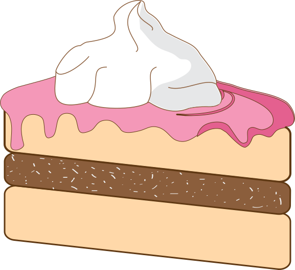

Торт "Вишневий Блюм"
Опис
Торт "Вишневий Блюм" — це справжня симфонія смаку, де ніжний бісквітний корж поєднується з легкою вишневою начинкою та вершковим кремом. Його витончений смак нагадує про весняне цвітіння і перші теплі дні. Кожен шматочок дарує відчуття свіжості та витонченої солодості, що робить його ідеальним вибором для особливих моментів.
Історія створення
Ідея створення "Вишневого Блюму" народилася під час подорожі одного з наших майстрів до Японії, коли він побачив дивовижне цвітіння сакури. Це видовище надихнуло його на створення десерту, який би відображав ніжність та красу цього моменту. Так, поєднавши традиційні вишневі нотки з повітряним кремом, ми створили цей унікальний торт, що став символом весняного оновлення і легкості.
Склад
- Бісквіт: борошно вищого ґатунку, яйця, цукор.
- Начинка: свіжа вишня, цукор, пектин.
- Крем: вершки 33%, цукрова пудра, ваніль.
- Декор: шоколад, свіжі ягоди.